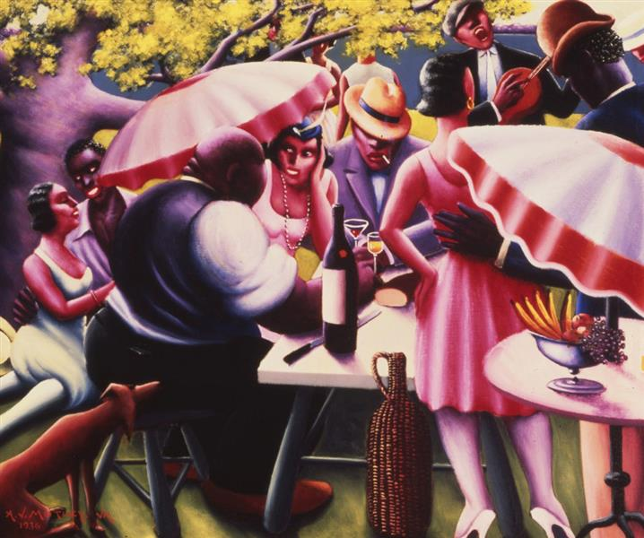
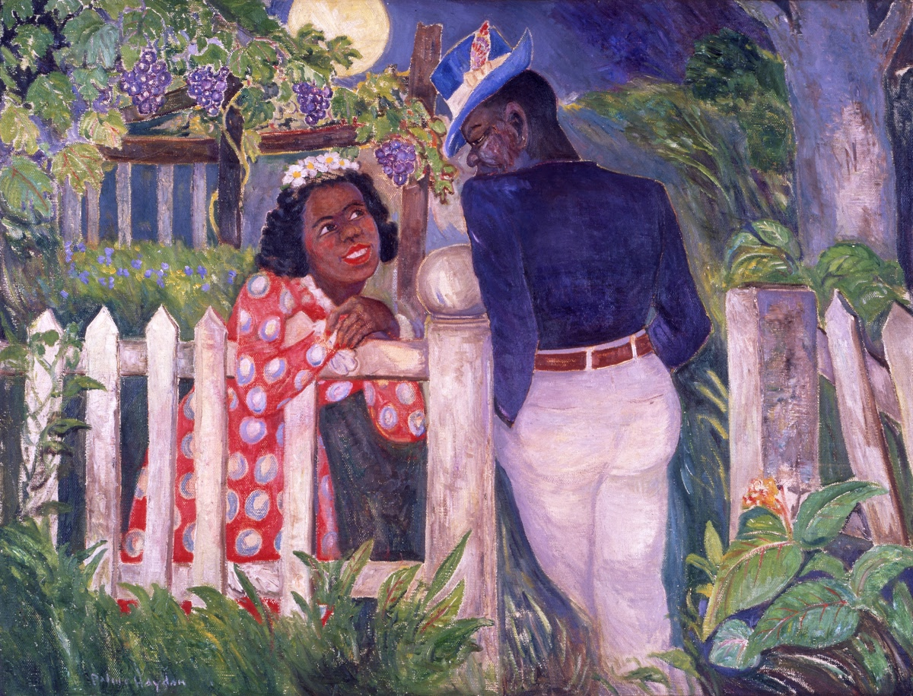
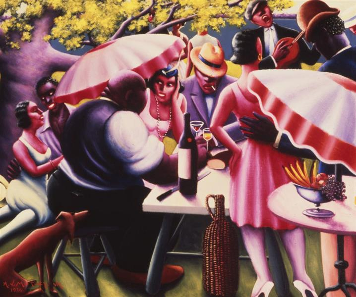
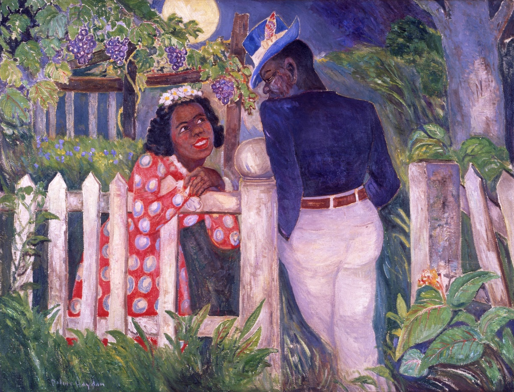

Giving a romanticized view of what life was like during the Harlem Rennaisance,
artist Allan Crite paints a beauitful medley of young students. Crite painted the image
during a time when boy and girl students were seperated by gender. Although life was not really
as idyllic as Crite's painting would suggest, it shows just one way the black community in Harlem
perservered and prospered to disprove racial stereotypes and overcome discrimination.
The Picnic -Archibald J. Motley Jr.
Archibald Motley was one of the most influential Rennaisance era painters, but lacks
the notoriety of other artists of his era. Many of his paintings are in the
private collections of wealthy art investors. But in recent years, much of his work
has been made more widely available for the public to appreciate. His vibrant colors put on display
black love and happiness during the Harlem Rennaisance.
Faune au Crépuscule -Palmer Hayden
Palmer Hayden leaves visible marks behind on the canvas with his brush,
allowing for viewers to get a good feel for the beautiful setting our subjects are in.
Two smitten lovers looking longingly at each other, you can practically feel their emotions
through the canvas. He prominently painted during the Harlem Rennaisance, with his other
works highlighting the social and economic disparities between the white man and both him personally and black
people as a whole.
If you want to learn more about the Harlem Rennaisance and the endless amounts of
high quality art pieces that were produced during the era, watch this video!
 


